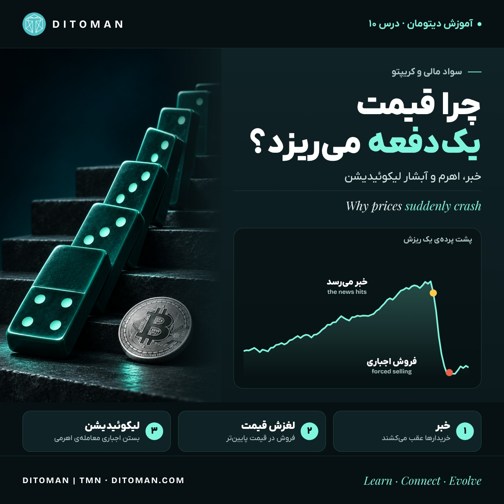

价格为什么会突然暴跌？
چرا قیمت یکدفعه میریزد؟
消息引发下跌。本课展示接下来在交易所内部发生了什么：买家退缩、滑点、杠杆和强平连锁反应，并以2026年11月5日的抛售为例。
خبر سقوط را شروع میکند. این درس نشان میدهد بعدش داخل صرافی چه میگذرد: عقب کشیدن خریدارها، لغزش قیمت، اهرم و آبشار لیکوئیدیشن؛ با ریزش ۱۴ آبان ۱۴۰۵ بهعنوان نمونه.
课程内容
محتوای درس
可用英文或波斯文阅读本课。这一结构为未来的测验、积分、声誉和奖励系统而设计。
درس را به فارسی یا انگلیسی بخوانید. این ساختار برای آزمونک، امتیاز، اعتبار و پاداشهایی طراحی شده که در آینده اضافه میشوند.
在第07课中，我们看到消息如何改变市场的预期。本课再往前一步：消息到来之后，交易所内部发生了什么，会让一次正常的回调变成急剧暴跌？简短的回答是三件事共同作用：紧张的买家、稀薄的订单簿和借来的钱。
01. 市场对意外做出反应
约翰·奥瑟斯（John Authers）的一幅彭博观点图表显示，全球股市（富时全球指数）上涨了两年，其间被几次急剧下跌打断，每一次都与重大政治或经济冲击有关。规律就是教训：当消息与人们的预期不同时，价格波动最大，而恐惧比平静传播得更快。
02. 一个真实例子：2026年11月5日
2026年11月5日星期四，科技股因对 AI 支出的担忧而被抛售。纳斯达克100指数一天下跌约5.5%，纳斯达克综合指数下跌4.9%。比特币跌破76,000美元，触及约75,500美元。在同样的24小时内，CoinGlass 数据显示约有10亿美元的杠杆加密货币仓位被强制平仓，涉及超过20.1万名交易者。其中约89%，约9.27亿美元，是押注价格上涨的仓位。
03. 屏幕上的价格并不总是你的价格
图表显示的是最近一笔成交。要卖出，你需要一个买家。设想最近一笔成交价是100美元，但100美元只有一个买家，下一个买家在95美元。如果你一次卖出两个单位，第一个得到100美元，第二个得到95美元：平均97.50美元。这种差距叫作 滑点。当买家在坏消息后退缩，他们之间的间隔会扩大，每一笔市价卖单都会把价格进一步压低。
04. 杠杆：用借来的钱交易
许多加密交易所允许你使用杠杆交易。使用10倍杠杆时，你自己的100美元（你的 保证金，或称抵押品）可以控制1,000美元的仓位。如果价格上涨10%，你的钱翻倍。如果下跌约10%，你的100美元就没了。
05. 强制平仓：交易所替你平仓
在你的保证金归零之前，交易所会自动以市价卖出来平掉你的仓位。这就是 强制平仓。你无法选择时机；价格替你选择。
06. 连锁反应
现在把这些放在一起。坏消息让买家退缩。一次小幅下跌触发第一批强平。这些被迫卖出打在稀薄的订单簿上，价格因此进一步下滑。更低的价格触发下一批强平，依此类推。这就是加密货币可以在几分钟内下跌得远超消息本身所能解释的幅度，也是为什么强制卖出结束后它常常反弹。
07. 如果比特币是独立的，为什么它会随股市下跌？
比特币网络不依赖任何政府或公司（第01至04课）。但它的价格是另一回事。许多投资者既持有股票也持有加密货币，当他们想降低风险时，会同时卖出一部分。网络可以是独立的，而它的价格仍会随着同一批人的情绪而波动。
08. 如何保护自己
- 要知道杠杆会放大亏损，也会放大收益；对大多数新手来说，不用杠杆更好。
- 行情快速变动时，使用限价单而不是市价单，这样价格由你来定。
- 在大额交易之前，不仅要看图表，还要看订单簿。
- 只使用损失后不会让家庭预算崩溃的钱。
- 不要在暴跌的最初几分钟做决定；强制卖出往往结束得和开始时一样快。
本课解释市场如何运作，不构成买入或卖出任何东西的建议。
本课要点
消息引发下跌。稀薄的订单簿和借来的钱决定下跌多远。
در درس هفتم دیدیم خبر چطور انتظار بازار را عوض میکند. این درس یک قدم جلوتر میرود: بعد از رسیدن خبر، داخل صرافی چه اتفاقی میافتد که یک افت معمولی به سقوط تند تبدیل میشود؟ جواب کوتاه: سه چیز با هم کار میکنند؛ خریدارهای نگران، دفتر سفارش کمعمق و پول قرضی.
۰۱. بازار به غافلگیری واکنش نشان میدهد
نموداری از جان آترز در Bloomberg Opinion نشان میدهد شاخص سهام جهانی FTSE All-World دو سال بالا رفته و چند بار بهتندی افت کرده؛ هر بار همراه یک شوک بزرگ سیاسی یا اقتصادی. درس همین الگوست: قیمت وقتی بیشتر حرکت میکند که خبر با انتظار مردم فرق داشته باشد، و ترس سریعتر از آرامش پخش میشود.
۰۲. یک نمونهی واقعی: ۱۴ آبان ۱۴۰۵
پنجشنبه ۱۴ آبان ۱۴۰۵ (۵ نوامبر ۲۰۲۶) سهام فناوری با نگرانی دربارهی هزینههای هوش مصنوعی ریخت. نزدک ۱۰۰ در یک روز حدود ۵٫۵٪ و نزدک مرکب ۴٫۹٪ افت کرد. بیتکوین به زیر ۷۶ هزار دلار رسید و تا حدود ۷۵٬۵۰۰ دلار پایین رفت. در همان ۲۴ ساعت، طبق دادهی CoinGlass، حدود یک میلیارد دلار معاملهی اهرمی کریپتو بهزور بسته شد و بیش از ۲۰۱ هزار معاملهگر را درگیر کرد. حدود ۸۹٪ آن، نزدیک ۹۲۷ میلیون دلار، شرطهایی بود که روی بالا رفتن قیمت بسته شده بود.
۰۳. قیمت روی صفحه همیشه قیمت شما نیست
نمودار آخرین معامله را نشان میدهد. برای فروش، خریدار لازم است. فرض کنید آخرین معامله ۱۰۰ دلار بوده، اما فقط یک خریدار در ۱۰۰ هست و خریدار بعدی در ۹۵. اگر دو واحد را فوری بفروشید، اولی ۱۰۰ و دومی ۹۵ دلار فروخته میشود؛ میانگین ۹۷٫۵ دلار. به این فاصله لغزش قیمت (Slippage) میگویند. وقتی بعد از خبر بد خریدارها عقب میکشند، فاصلهی بینشان بیشتر میشود و هر سفارش فروش فوری قیمت را پایینتر میبرد.
۰۴. اهرم: معامله با پول قرضی
بسیاری از صرافیهای کریپتو معاملهی اهرمی دارند. با اهرم ۱۰ برابر، ۱۰۰ دلار پول خودتان (یعنی وثیقه یا مارجین) یک معاملهی ۱۰۰۰ دلاری را کنترل میکند. اگر قیمت ۱۰٪ بالا برود، پولتان دو برابر میشود. اگر حدود ۱۰٪ پایین بیاید، همهی ۱۰۰ دلار از دست رفته است.
۰۵. لیکوئیدیشن: صرافی معامله را بهجای شما میبندد
پیش از اینکه وثیقهتان به صفر برسد، صرافی معامله را خودکار و با قیمت بازار میفروشد. به این لیکوئیدیشن یا فروش اجباری میگویند. لحظهاش را شما انتخاب نمیکنید؛ قیمت انتخاب میکند.
۰۶. آبشار فروش
حالا همه را کنار هم بگذارید. خبر بد خریدارها را عقب میکشد. یک افت کوچک اولین لیکوئیدیشنها را فعال میکند. این فروشهای اجباری به دفتر سفارش کمعمق میخورند و قیمت بیشتر میلغزد. قیمت پایینتر گروه بعدی لیکوئیدیشنها را فعال میکند، و همینطور ادامه دارد. برای همین کریپتو گاهی در چند دقیقه خیلی بیشتر از وزن خود خبر میریزد، و وقتی فروش اجباری تمام شد، اغلب کمی برمیگردد.
۰۷. اگر بیتکوین مستقل است، چرا با بورس میریزد؟
شبکهی بیتکوین به هیچ دولت یا شرکتی وابسته نیست (درسهای ۱ تا ۴). اما قیمتش موضوع دیگری است. خیلی از سرمایهگذارها هم سهام دارند و هم کریپتو، و وقتی بخواهند ریسکشان را کم کنند، از هر دو میفروشند. شبکه میتواند مستقل باشد و قیمتش هنوز با حال و هوای همان آدمها تکان بخورد.
۰۸. چطور از خودمان محافظت کنیم
- اهرم ضرر را به همان اندازهی سود چند برابر میکند؛ برای بیشتر تازهکارها بهتر است سراغش نروند.
- در بازار پرنوسان بهجای سفارش فوری (مارکت) از سفارش با قیمت مشخص (لیمیت) استفاده کنید تا قیمت را خودتان انتخاب کنید.
- پیش از معاملهی بزرگ، علاوه بر نمودار، دفتر سفارش را هم نگاه کنید.
- فقط با پولی معامله کنید که از دست دادنش بودجهی خانه را به هم نریزد.
- در چند دقیقهی اول سقوط تصمیم نگیرید؛ فروش اجباری اغلب همانقدر سریع که شروع میشود، تمام میشود.
این درس سازوکار بازار را توضیح میدهد و توصیهای برای خرید یا فروش هیچ دارایی نیست.
چه برداشتی کنیم
خبر سقوط را شروع میکند. دفتر سفارش کمعمق و پول قرضی تعیین میکنند تا کجا ادامه پیدا کند.
自己试一试
خودتان امتحان کنید
在你使用的交易所里，打开任意一种币的订单簿。把当前价格1%以内和5%以内的买单数量加起来。问问自己：如果我现在以市价卖出全部仓位，平均能得到什么价格？
دفتر سفارش یک ارز را در صرافیای که استفاده میکنید باز کنید. جمع سفارشهای خرید تا ۱٪ و تا ۵٪ زیر قیمت فعلی را حساب کنید. از خودتان بپرسید: اگر همین حالا کل داراییام را فوری بفروشم، میانگین چه قیمتی میگیرم؟
核心概念
مفاهیم کلیدی
- 预期与意外
- 订单簿与市场深度
- 滑点
- 杠杆与保证金
- 强制平仓与强平连锁反应
- 网络独立性与价格表现
- انتظار و غافلگیری
- دفتر سفارش و عمق بازار
- لغزش قیمت
- اهرم و وثیقه
- لیکوئیدیشن و آبشار فروش
- استقلال شبکه در برابر رفتار قیمت
学习目标
اهداف یادگیری
- 解释为什么图表上的价格可能与你实际成交的价格不同。
- 计算市价单穿过稀薄订单簿时的平均价格。
- 描述杠杆和保证金如何运作，以及何时会发生强制平仓。
- 解释强平如何像连锁反应一样相互助推。
- 说出降低这些风险的实用方法。
- توضیح دهید چرا قیمت روی نمودار با قیمتی که میگیرید فرق میکند.
- میانگین قیمت یک سفارش فوری را در دفتر سفارش کمعمق حساب کنید.
- شرح دهید اهرم و وثیقه چطور کار میکنند و لیکوئیدیشن کی اتفاق میافتد.
- توضیح دهید لیکوئیدیشنها چطور در یک آبشار همدیگر را تشدید میکنند.
- راههای عملی کم کردن این ریسکها را نام ببرید.
未来测验题库
بانک پرسشهای آزمونک آینده
这些问题是为未来的 Ditoman 测验与参与系统准备的。它们日后可能用于学习积分、声誉层级，以及可能的 TMN 奖励资格。
این پرسشها برای سامانهی آزمونک و مشارکت آیندهی دیتومان آماده شدهاند. ممکن است بعدها مبنای امتیاز یادگیری، لایههای اعتبار و احتمالاً شرایط دریافت پاداش TMN شوند.
第1题
پرسش ۱
最近一笔成交价是100美元。100美元有一个买家，下一个在95美元。你以市价卖出两个单位。你的平均价格是多少？
آخرین معامله ۱۰۰ دلار بوده. یک خریدار در ۱۰۰ و بعدی در ۹۵ دلار است. دو واحد را فوری میفروشید. میانگین قیمت فروش چقدر است؟
A. $100
الف. ۱۰۰ دلار
B. $97.50
ب. ۹۷٫۵ دلار
C. $95
ج. ۹۵ دلار
D. $102.50
د. ۱۰۲٫۵ دلار
正确答案：B
پاسخ درست: ب
第2题
پرسش ۲
在10倍杠杆和100美元保证金下，价格大约要下跌多少，保证金才会耗尽？
با اهرم ۱۰ برابر و ۱۰۰ دلار وثیقه، قیمت حدوداً چقدر باید بیفتد تا وثیقه از دست برود؟
A. 1%
الف. ۱٪
B. 10%
ب. ۱۰٪
C. 50%
ج. ۵۰٪
D. 100%
د. ۱۰۰٪
正确答案：B
پاسخ درست: ب
第3题
پرسش ۳
什么是爆仓？
لیکوئیدیشن چیست؟
正确答案：当保证金即将耗尽时，交易所自动平掉杠杆仓位。
پاسخ درست: وقتی صرافی یک معاملهی اهرمی را بهخاطر تمام شدن وثیقه، خودکار میبندد.
第4题
پرسش ۴
判断：如果比特币网络独立于政府，它的价格就不会和股票一起下跌。
درست یا نادرست: اگر شبکهی بیتکوین از دولتها مستقل است، قیمتش نمیتواند همزمان با سهام بریزد.
正确答案：错误。许多投资者两者都持有，想降低风险时会两者都卖。
پاسخ درست: نادرست. خیلی از سرمایهگذارها هر دو را دارند و برای کم کردن ریسک از هر دو میفروشند.
第5题
پرسش ۵
2026年11月5日，约10亿美元的加密货币强平中，大约多少比例是押注价格上涨的仓位？
در ۱۴ آبان ۱۴۰۵، حدوداً چه سهمی از لیکوئیدیشن یک میلیارد دلاری کریپتو، شرط روی بالا رفتن قیمت بود؟
A. 约11%
الف. حدود ۱۱٪
B. 约50%
ب. حدود ۵۰٪
C. 约89%
ج. حدود ۸۹٪
D. 100%
د. ۱۰۰٪
正确答案：C
پاسخ درست: ج
关注 Ditoman
دیتومان را دنبال کنید
新课程会首先在 Ditoman 的 Telegram 和 Instagram 上发布。
درسهای تازه اول در تلگرام و اینستاگرام دیتومان معرفی میشوند.